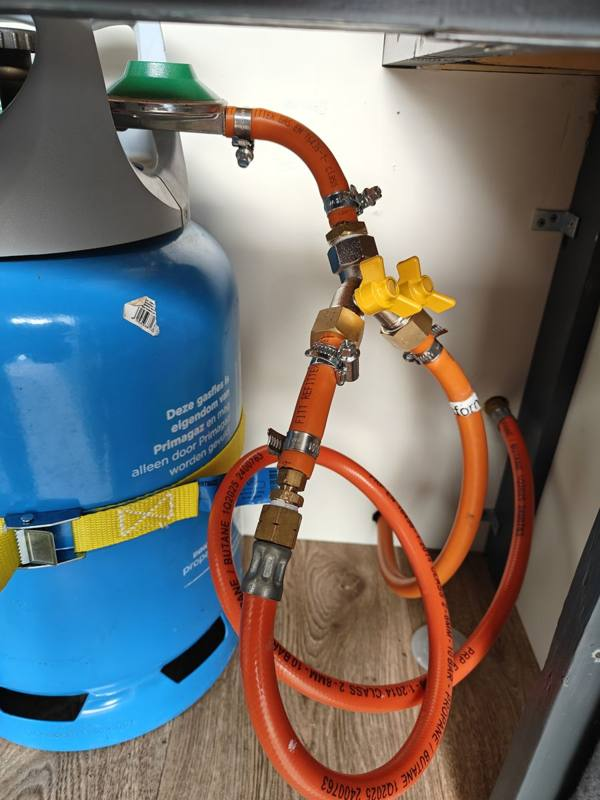

Je kookt op een Thetford Topline-kookplaat met 2 pitten. Het gas komt uit een blauwe propaanfles van 9 kg (Primagaz). Die staat helemaal achteraan in de bank aan de passagierskant.

Koken
- Draai de gasfles open.
- Open de gele gaskraan van het fornuis.
- Open de glazen deksel van de kookplaat.
- Houd een brandende lucifer bij de pit. De lucifers liggen in de eerste schuif.
- Duw de knop van de pit in en draai hem naar links.
- Houd de knop nog 5 tot 10 seconden ingedrukt. Zo blijft de vlam branden (beveiliging).
- Zet een dakraam of raam open terwijl je kookt.
Na het koken
- Draai de knop dicht.
- Laat de deksel afkoelen voor je hem sluit.
- Draai de gele kraan van het fornuis dicht, en de gasfles als je niets meer op gas gebruikt.
Let op
Ruik je gas? Draai de fles meteen dicht, zet deuren en ramen open, gebruik geen vuur en geen schakelaars. Ga naar buiten. Ruik je het nog, bel dan 112.
Gasfles leeg?
- Een nieuwe fles (blauwe Primagaz propaan 9 kg) koop of ruil je bij de Gamma.
- Draai de lege fles dicht en draai de drukregelaar los.
- Zet de volle fles vast met de spanband en draai de regelaar aan.
- Draai de fles open en controleer met zeepwater of er geen lek is (bellen = lek).
- Draai de gasfles dicht tijdens het rijden, bij het tanken en op een boot of in een tunnel.